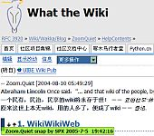

提纲
- Wiki ! 到底什么是Wiki? 为什么要Wiki?
- MoinMoin 轻便灵活，高效的 Wiki 系统！
- 我们现在已有的Wiki 应用情景...MoinMoin 中还可以作到的……
- 那么 怎么样使用MoinMoin:
- 开始，神说要有光……
- 创建页面的N种方式
- 修改页面的唯一方式
- 组织页面的N种方式
- 可爱的N种扩展....
What Is Wiki?
- 源自夏威夷语的“wee kee wee kee”
- 从1996年至2000年间, Wiki 的概念不断得到丰富, 并传播开来!
- 其中影响最大的莫过于

- 维基百科全书
- 是目前世界上最大的Wiki系统
- 是一个基于Wiki的百科全书网站系统，致力于创建内容开放的百科全书
- 该系统于2001年1月开始投入运作
- 2001年2月超过1,000条条目
- 2001年7月超过10,000条条目
- 2003年1月22日，英语维基百科达到了100,000条条目的里程碑
- 至2005年3月，英文条目已经超过500,000条
- 2001年5月，12个非英语维基百科版本计划开始
- 维基百科中文版始于2002年10月
- 现在中文版已经有 32,830 个条目
- 而且…………
为什么Wiki?
- Wiki 有如下公认的特性
- 使用方便
- 维护快捷：页面的增,删,改非常快捷
（这也是为什么叫作 "wiki wiki" 的原因）
- 格式简单：用简单的结构化文本来取代 HTML 的标记
- 链接方便：通过简单标记，直接以关键字名来建立链接
（页面、外部连接、图像等)
- 命名平易：关键字名就是页面名称，会自动在其它地方生成对应的链接
- 随机性强: 易用,随想随写!
(之所以称"森林"的原因)
- 可增长
- 可增长：链接目标可以尚未存在,通过点击创建新页面来增长系统内容
- 修订历史：记录页面的修订历史，页面的各个版本都可以被获取
- 开放性
- 开放的：社群内的成员可以任意创建、修改、或删除页面
- 可观察：页面的变动可以被清楚观察得到
原来这世上本无wiki,用的人多了,便成了wiki
- Wiki 的特性通常在如下情景非常实用
- 文档的创建
- 软件设计阶段：技术人员之间,管理人员、技术人员和用户之间
可以通过共同起草的模式快速确定统一的任务文档
- 大型的技术文档翻译：
通过Wiki组织,可以快速形成松散的翻译团队,不断的完善,修改,推行
- 连载小说的创作：
通过Wiki 组织不同章节,线索的创作团队共同进行
- FAQ整理
- ...
- 创建词典，百科全书
- 新兴的文化现象流行的时候：
通过 Wiki 可以快捷的收集,组织,整理,发布各种缩写,专用词...
- ...
- 团队blogs, team bloging
- 团队，社团活动的记录需要互动性：
通过Wiki 组织页面,共同相互补充,记录同一事件的过程...
- ...
- 使用 Wiki 的方式并没有固定模式,一切都可以想象,尝试!
Wiki vs ...
- 相对于Blog,BBS 等等其它流行的内容组织系统
- Wiki 有着鲜明的文化特点
- 主体是明确的坚定的:
- 内容要求是高度相关的:
- 因其确定的主旨，任何写作者和参与者都应当严肃地遵从
- 个性是被漠视的:
- Wiki非常适合于做一种 "All about something"的站点
- 信息的完整性和充分性以及权威性才是真正的目标
人之初，性本善
- Wiki 的核心精神
- 价值观在于
- 安全观点基于
- 目的意义
- 群笔
- 共同写作
- 知识型站点的快速创建,维护,管理
- 指一种 内容的创建、更新、监控、审查和档案管理都非常自由开放，同时遵循一定技术规则的网站
wiki的开放性是建立在强大的技术基础上的，更建立在革新性的安全观念基础上
Wiki 的技术规范
- wiki在技术上和运行规则上做了一些规范
- 做到既持面向大宗公开参与的原则又尽量降低众多参与者带来的风险
- 1）
记录更动: WIki 保留文章每一次更动的版本,
并可以轻易的恢复到任何一个版本
- 2）
版本对比: Wiki 每个页面的任意两个版本之间都可以进行对比
- 3）更新描述: 在更新一个页面时可以在描述栏中填写的内容，
如你更新内容的概要,依据、或是跟管理员的对话等
- 4）Sand Box(沙箱)测试: 一个合法的练习Wiki书写,涂鸦的页面
- 5）编辑规则: 任何一个开放的wiki都有一套编辑规则，写明大家建设维护wiki站点的规则。
(没有规矩不成方圆的道理任何地方都是适用的)
WYTIWYG
- Wiki 关注内容和结构!
- WYSIWYG(Waht You See Is What You Get)所见即所得
- 富文本格式编辑
- 用户是排版设计者同时又是内容撰写者
- 用户思考定位模糊,分散精力
- WYTIWYG(Waht You Think Is What You Get)所想即所得
- 结构化文本编辑
- 用户仅仅内容撰写者
- 集中精力在内容的结构组织和措辞中,书写自然,效率高!
- 实际上高级Wiki 支持多种编辑规则:
比如说 Plone 中的 ZWiki:
结构化文本
- 使用缩进和简单的符号来标识文档结构的文本!

- 使用其它的方法来快速改变文档外观,比如说:
-
通过模板可以:
- 有的结构化文本,通过精巧的工具,可以输出多种格式文档
,如 txt2tags:

Wiki系统
- 由于Wiki 的内容组织方式简单明晰,Wiki的不同风格的实现也非常的多
- 甚至于很多系统中内置了完整的 Wiki 系统
- trac 一个综合性的软件工程管理系统,内含了 Wiki 作为文档组织
-
- Plone 一个Zope 平台的CMS系统,通过产品扩展可以轻易的使用Wiki
-
开始
- 先注册吧您…………
-
- 本来可以不注册就改的，但是……
创建页面
- 创建一个页面，不仅仅是创建了一个页面
- 使用标准的 WikiName 在正文中
"""
NewPage -- 新页面
"""
- 在地址栏中直接输入新页面名称
- 使用强制新页面声明
"""
["newpage1"] -- 新页面1
["新页面2"] -- 中文也可以
""" 但是千万不要轻易使用中文！
- 页面/文章是 Wiki 站点的基本元素，可以方便的相互间指引的
修改内容
- 您就随便来吧！
- 没有限制，但是有礼节！
- 他人明显的错误直接修改，在"备注"中说明一下子
- 讨论，则在页面的反馈位置说明，或是使用
"""
讨论，则在页面的反馈位置说明，
[[FootNote(这样一来你方我便)]]
""" 脚注
- 别人好心作了错事儿，不要发火，从历史中恢复前说明吧
组织内容
- 美观 vs 快捷记述
使用“模板”吧！
这是众人智慧的结晶...
子页面
- 让一串页面成为强连接！
/SupDoc1 - 分文档1
["/about"] - 有关说明
- 不过要谨慎……
包含
- 将其它页面包含到本地！
[[Include(/SupDoc1)]] - 包含子页面
[[Include(OtherPage)]] - 包含其它页面
- 不过还可以进一步的……
[[Include(^WikiSandBox/.*
,'页面提纲',4
,sort=descending
,items=30
,titlesonly)]]
月历
- 自动化的子页面索引
[[MonthCalendar]]
- 与提纲式包含配合，真所谓相得益彰是也乎！
[[MonthCalendar]]
'''日志提要'''
[[Include(^SKSIG/2005-.*,
'日志简报',4,
sort=descending,
items=30,titlesonly)]]
还有………………
- 表格？ 不要深究……
- 图片？ easy easy
- InterWiki！！伟大的懒惰
[wiki:JIRA/MAILRUNER-2575 MAILRUNER-2575]
自动解析为:
http://issue.internal.sina.com.cn/browse/MAILRUNER-2575
可以想象为可定制的自动替换
- 还有………………
自学吧！
但是！
- 大家体会，想大规模的使用Wiki,必须:
- 搜索加强！！！
- TAG 支持！
- 这样来平滑掺合的难度……
MoinMoin
- 我们选择MoinMoin
作为 Wiki 系统组织进行 知识管理
- 特点
- 基于文件,不使用DB
- 完整实用的 结构文本约定
- 实现全部 Wiki 规范
- 丰富的导航方式
- 多种扩展方式: 宏，插件，预处理……
- 支持样式
- 真正跨平台
- 丰富运行方式
- .....
MoinMoin 之于部门可以……
- 利用日历宏[[MonthCalendar]] 和 包含宏[[Include()]]
-
媒体技术部·支持组工作日志
- 依照时间线索记录事故响应处理
-
MoinMoin 还可以……
- 重复组织子页面和简单表格
- 汇集
研发中心技术图书馆 书目
- 进行预订，记录，提醒等等图书管理活动
-
MoinMoin 还可以……
- 利用链接，标题，随手记要
- 自然形成了
-
网际发现
- 关注，讨论网络中的技术变化
-
MoinMoin 的惊奇杂耍……
- 科学排版:
-
Latex
- 在MoinMoin 中直接使用 tex 来书写科学公式
-
总结
- Wiki ! 快捷科学的公共写作模式！
- MoinMoin 轻便灵活，高效的 Wiki 系统！
- 那么:
- 我们利用Wiki 可以进行怎样的知识整理？
- 我们利用Wiki 可以进行怎样的知识管理？
- 我们利用Wiki 可以进行怎样的知识分享？
- 我们要如何....
关于...
- 幻灯展示:
-
 S5 : A Simple Standards-Based Slide Show System
S5 : A Simple Standards-Based Slide Show System
- 纯HTML 幻灯效果工具制作 本地介绍页面
- 编写环境:

-
 Leo
Leo
:: 文学编程环境
- 纯Python 实现的通用编辑环境
制作免责
- Zoom.Quiet
伙同所有打杂人士共同制作
- ,,...
- 一切资料来自互联网
- 所有思想来自日常工作体验
- 所有经验来自失败的经历……

- 释放思想,
- 让我们发挥想象力,利用Wiki 自由的汇集,总结,再创造我们的核心知识!
- 无间协作!
- 让我们运用 Wiki 的开放精神,培养合众联创的素质,不断创新!进步!
 Zoom.Quiet
Zoom.Quiet